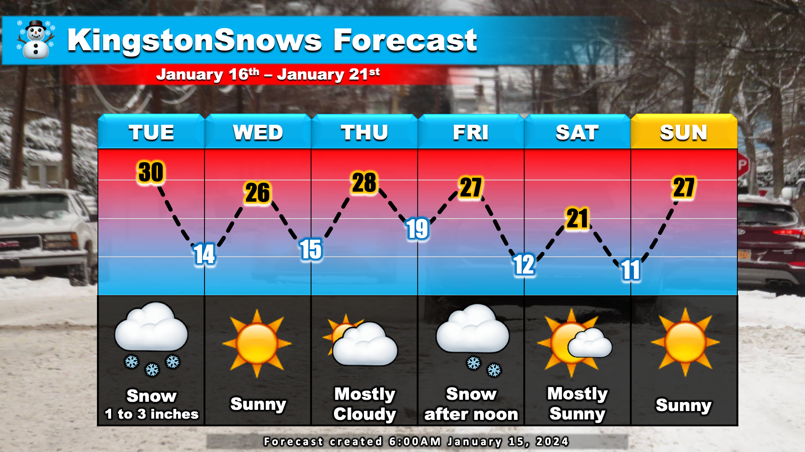
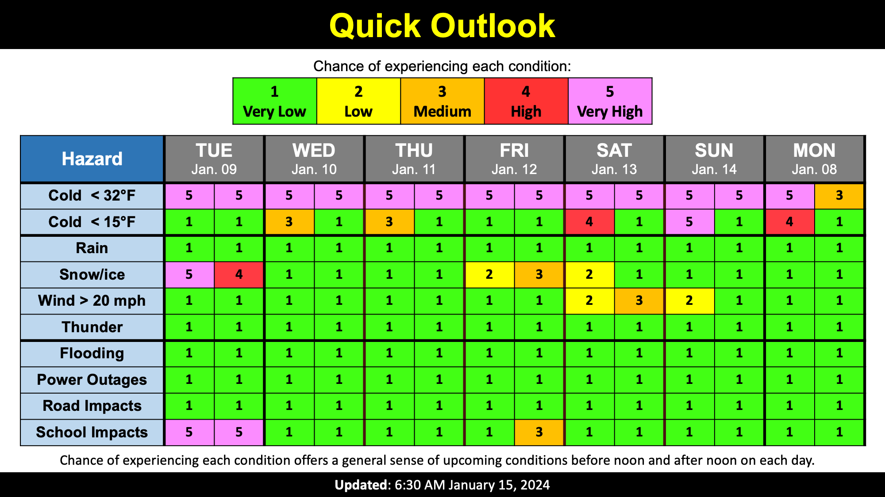

Warning: this is an old update that has been archived. This update is not current.
Accumulating Snow Tomorrow
School Forecast
for Tuesday January 16th
Last updated: 6:30AM Monday January 15, 2024
| 0% (Nope) |
|---|
| 70% (High) |
|---|
| 20% (Low) |
|---|
___________________
6:30AM Monday Update
A storm system currently moving through the deep south will bring accumulating snow to New York tomorrow. This will result in a snowy start to this holiday week and impact travel on Tuesday.

The Forecast:
Storm approaching from the south will produce snow late tonight. Currently expecting light snow to develop before sunrise Tuesday - mostly likely by about 3AM.
Light snow throughout the day is expected before tapering off by about 3PM Tuesday. One to three inches of snow is likely. Behind the storm, calm weather will move in for Wednesday and Thursday. A
Second storm may approach the region on Friday, which could produce some additional snow later in the week. Temperatures this week will be pretty typical for
this time of year with afternoon highs reaching the upper 20s and overnight lows in the teens.
The Impacts:
The main weather impacts for this week will be with Tuesday's storm. Temperatures tonight and Tuesday will be in the 20s. This means that any snow that falls will
have no trouble sticking to all surfaces including roads. The timing of this storm is also conducive to travel impacts. With snow expected to begin before
sunrise, there is likely to be a coating by 5AM which will impact the Tuesday morning commute. Travel on roads will be possible, but they will be slick and hazardous from powdery snow.
Slick roads are likely to persist into the evening. For these reasons, it is most likely that local schools issue cancellations; any schools that do not cancel are likely to dismiss early. There is
about a 10% chance that schools do not cancel or dismiss early.

Next Update:
Tuesday
-Ethan

KingstonSnows | Kingston, New York
Website built by Ethan Burwell